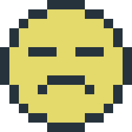
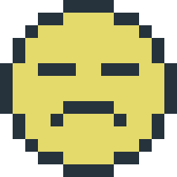
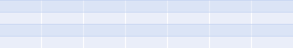
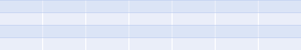

The internet feels like a city where I
used to live.
It doesn't anymore, although I spend more time there —— here —— than ever.
Now it’s as a ticketed visitor, furtive and overwhelmed, the language I
used to speak fluently withering to nothing on my tongue.
Maybe it's not the internet. Maybe it's
the words. Or me!
 

 
